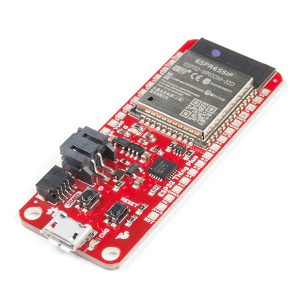

Make an IoT sensor show stale data clearly
Extend the ESP32 and MQTT bench so a dashboard distinguishes a fresh sample, a sensor that stopped updating and a lost connection.
Keep the bench small

Photo by SparkFun Electronics. Original photo · CC BY 2.0.

Reuse the P18 ESP32, broker and Node-RED flow on your own isolated lab network. Use the temperature topic bench/l1/plantroom/temp and the status topic bench/l1/plantroom/esp32-01/status. Leave the LED output as a local trainer. Confirm that the ESP32’s last will is retained offline and its successful connection publishes retained online. Change the temperature publish call’s retain argument to false for this exercise. Clear any previously retained temperature by sending an empty retained message on that exact lab topic from a client authorised to publish there. Your dashboard will then wait for an actual sample after reconnecting.
Build a freshness indicator in Node-RED
Watch on YouTube · Node-Red -MQTT Retained Message Tool · Steve Cope
Watch what a subscriber receives when the broker retains a message. Try reconnecting after sensor power is removed and check whether your dashboard correctly calls that reading stale.
In your lab flow, wire the temperature and device status MQTT In nodes to one Function node and set both to UTF-8 string. Add a Status node scoped to the temperature MQTT In node to report the dashboard’s own broker connection. Add an Inject node with topic bench/clock set to fire once on deploy and every second. Wire those two nodes to the same Function. For a fault test, add two manual Inject nodes with the topic bench/test/pause and Boolean payloads true and false. Wire them to the same Function, then wire its output to a Debug node. The freshness deadline is 30 seconds for a device reporting roughly every 10 seconds.
const now = Date.now();
const temperatureTopic = "bench/l1/plantroom/temp";
const statusTopic = "bench/l1/plantroom/esp32-01/status";
let sample = context.get("sample") || null;
let status = context.get("status") || "unknown";
let brokerConnected = context.get("brokerConnected") === true;
if (msg.status) {
brokerConnected = msg.status.fill === "green" && msg.status.shape === "dot";
if (!brokerConnected) {
sample = null;
status = "unknown";
}
} else if (msg.topic === "bench/test/pause") {
context.set("paused", msg.payload === true);
} else if (msg.topic === statusTopic) {
const value = String(msg.payload).trim();
if (value === "online" || value === "offline") status = value;
if (status !== "online") sample = null;
} else if (msg.topic === temperatureTopic) {
const value = String(msg.payload).trim();
const temperature = Number(value);
if (!context.get("paused") && !msg.retain && value.length > 0 && Number.isFinite(temperature)) {
sample = { temperature, receivedAt: now };
}
}
context.set("sample", sample);
context.set("status", status);
context.set("brokerConnected", brokerConnected);
const age = sample ? now - sample.receivedAt : null;
const fresh = brokerConnected && status === "online" && age !== null && age >= 0 && age < 30000;
msg.payload = {
brokerConnected,
status,
fresh,
temperature: fresh ? sample.temperature : null,
ageSeconds: age === null ? null : Math.floor(age / 1000)
};
return msg;Use Node-RED’s default memory context for this lab. A known broker disconnect clears the sample immediately, and expiry provides an independent check while the connection is still reported as online. A recovered session may report online before it supplies fresh data. Node-RED Function node and context reference · Node-RED status events.
Prove the failure behaviour
| Test | Expected evidence |
|---|---|
| Start the dashboard while the device is online | Online status can arrive first. A new sample makes fresh true. |
| Press the true Inject button after a fresh sample, then resume with false | The flow ignores new samples while the device remains online. The reading becomes null 30 seconds after the last accepted sample. On resume it stays blank until a new sample arrives. |
| Unplug the ESP32’s USB power | A broker that detects unexpected disconnect publishes the last will. Staleness is bounded by the local expiry even if the will arrives later. |
| Reconnect after an outage | Capture the first new sample and record how long the indicator takes to recover. Repeat with the broker temporarily disconnected from the lab network. |
T17 explains the TCP connection underlying MQTT, and T30 covers liveness and expiry timers. A retained message is broker state, and QoS describes message delivery. Neither establishes sample freshness. An extension is to include a device session ID, sequence number and capture time so delayed and duplicate deliveries can be spotted. OASIS MQTT 3.1.1 specification.
Apply the same age check to a virtual CAN frame or handle a front end with separate command and proof history.